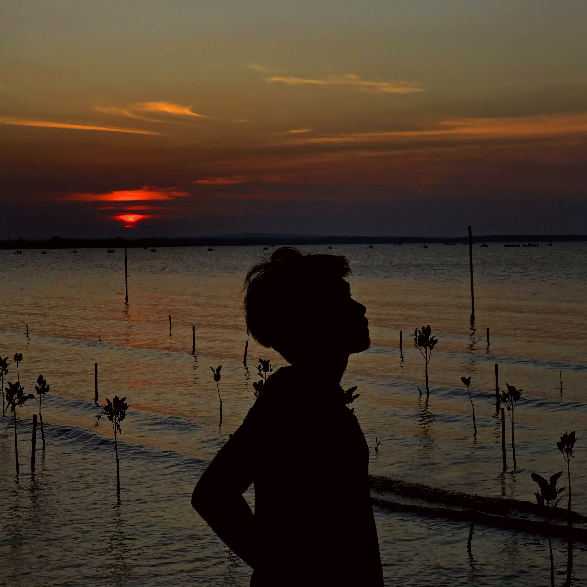

Biodata

Tentang Saya
Nama Saya Galih Previand Wicaksono lahir di Malang 27 Maret 2002, Saya adalah anak pertama dari 2 bersaudara.
Saya Berkuliah di POLITEKNIK NEGERI MALANG, Saya suka bermain game dan berolahraga.
Pendidikan
SD : SD ISLAM BANI HASYIM
SMP : SMP ISLAM BANI HASYIM
SMA : SMA LABORATORIUM UM MALANG
KULIAH : POLITEKNIK NEGERI MALANG
KULIAH : POLITEKNIK NEGERI MALANG
Minat Dibidang IT
- Android Programming
- UI/UX Design
- Frontend Backend Programming
Contact me
Instagram
Github
linkedin
Portofolio
Portofolio